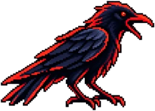

CROW: Classifier-Routed Organization of LLM Wikis Sep 2026First author, with Marco Sassarini · paper, open-source implementation and desktop app
In an LLM wiki, a language model files documents into a tree of notes and answers questions from them, but every small decision, such as where a document belongs or which note to read, costs a model call. CROW hands those decisions to a fast, cheap classifier and keeps the language model only for writing.
On 525 real documents, compared with the same pipeline driven by a language model, CROW added documents at half the cost and in half the time (18 s instead of 39 s each), and found the right note for a question 89% of the time instead of 62%, about twice as fast.
CROW against the same wiki run only by a language model
Per document added, and per question asked
Right note read higher is better
Time to add a document lower is better
LLM tokens to add a document lower is better
From the CROW paper and the llm-wiki-v2 benchmark: 2.1× faster and 68% fewer LLM tokens per document.
The cost of each new document stays flat as the wiki grows, and a cost model built on these measurements keeps it at about $0.006 per document up to a million documents.
The open-source implementation, which I maintain, keeps the wiki as plain Markdown files on your own computer, works with any AI provider, Ollama included, and cites its sources. It can also be the long-term memory of Claude Code, Codex or any MCP client.
With no paid ads, as of November 2026 llm-wiki-v2 has 250+ stars and 40+ forks on GitHub and about 3,000 downloads on PyPI (mirrors included), and the paper about 3,000 views on Zenodo.